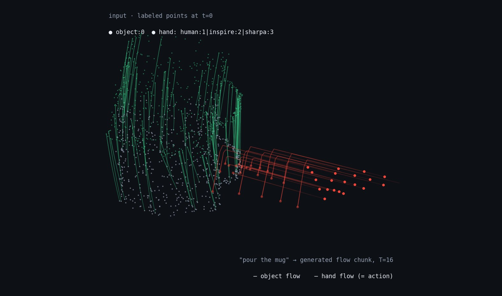

Scene and embodiment are one labeled point set; the model generates point-matched flow chunks for all of it — video-generation techniques, one extra dimension, two structural wins: the embodiment's points are part of the output, so generation = action (no inverse-dynamics gap), and cross-embodiment transfer becomes inpainting across the label axis.

No logs yet — the first opens with pilot item 0 (unified schema + GRAB→point-flow converter).
Each component is de-risked by an existing work; the assembly — generative, language-conditioned, joint hand+object flow with an explicit embodiment-swap objective — is the open slot.
Video-gen robotics needs an IDM to turn predicted futures into actions. Here the embodiment's points are generated too, so predicting the future is the action; the IDM collapses into IK. Policy and world model are the same sampled object.
Condition on object flow, swap the embodiment label, inpaint the hand. Trained explicitly on pair-constructed corpora (same mocap executed by human and robot hands). One forward pass where CHORD spends hours of per-task RL — opens real-time imitation of a live demonstrator.
Human data is not a pretraining tier — it is the same modality as robot data. Cross-embodiment co-training transfers through the action space itself, provable via transfer matrices, human↔robot data exchange rates, and zero-paired-supervision tasks.
| neighbor | establishes | lacks (= our delta) |
|---|---|---|
| PointWorld (NVlabs '26) | point flow as action at scale (2M traj); MPC at 0.1 s; design-study goldmine | action-conditioned world model only — no language, no generation of embodiment flow, no dex hands, no human data |
| Dexterous Point Policy ('26) | points→IK works on real dex hand (75% vs VLA 1%); contact channel +71% | 6 sparse points, regression, no scene generation |
| 3PoinTr ('26) | dense 3D scene flow from human video; 20-demo policies | no language, open-loop, embodiment deleted |
| CHORD + ManipTrans | human demos → sim-ready robot-hand episodes; the paired data engine (CHORD's primary hand is Sharpa) | per-task-instance pipelines: new demo + RL per task, privileged sim state, no policy prior |
| π0 / GR00T-class VLAs | open-vocabulary semantics from VLM pretraining | disjoint per-robot action spaces; human video demoted to pretraining; no geometry-native transfer |
Positioning line: our relation to CHORD is a video foundation model's relation to its data engine.
Generated flow → per-link Procrustes + IK → sim replay task success (pilot M1–M5, GRAB→ARCTIC→paired subset).
The data pyramid is one spectrum sorted by what is observable — static scans → action-free video → human HOI → paired retargeted → robot teleop — one loss, different masks.
Transfer matrix + human↔robot data exchange-rate curves + zero-paired-supervision tasks (E4). Matched-budget and additive mixes to kill the task-diversity confound.
Drop object-flow generation at matched params: if action success doesn't fall, the claim dies. Also: verifier-filtered sampling (the model rejects its own futures that miss the instruction).
H1–H4 vs data scale, PointWorld-style scaling-curve methodology.
| component | v0.1 default |
|---|---|
| representation | per-point xyz + instance embed + class label; embodiment = small closed set (human:1, inspire:2, sharpa:3…); embodiment points sampled from MANO/URDF mesh with link IDs (keeps IK closed-form); target = Δx over T=16 @ 10 Hz + per-point contact logits |
| semantics | objects get continuous per-point features (SigLIP/DINO distilled) in phase 2 — integer object labels are a semantic dead end for language |
| backbone | one token per point-track; factorized DiT — spatial attn over PTv3-serialized order, temporal along each track; MM-DiT text conditioning; ~100–200M pilot |
| objective | conditional flow matching + CFG; aux contact BCE, per-instance SE(3) rigidity, penetration penalty; best-of-N with analytic verifiers at inference |
| masking menu | full generation · object-conditioned hand inpainting (retargeting) · hand-conditioned object outpainting (world model) · embodiment swap on paired data · partial-cloud conditioning (occlusion robustness free) |
| deployment | Procrustes+IK → joints; contact-triggered over-closure; ManipTrans-style residual tracker for the contact-rich last mile; closed loop = regenerate per chunk (distillation deferred past pilot) |
| data tier | sources | gives |
|---|---|---|
| 2 — mocap HOI (pilot) | CHORD's confirmed list: GRAB · ARCTIC · TACO · OakInk · HOT3D · DexYCB · H2O | mesh+pose ⇒ exact point-matched flow; verb-level language via intent labels |
| 2R — paired robot | DexManipNet; CHORD tasks if released; fallback: run ManipTrans ourselves on the same mocap (mints unlimited pairs for our hands) | the embodiment-swap supervision |
| 1 — lifted web video (phase 2) | VGGT-Ω / SpatialTrackerV2 / TAPIP3D over Ego4D, EPIC, EgoDex-class | open-vocabulary language — without it the model follows ~50 verbs and stops |
| 3 — real teleop (phase 3) | small, ours | hardware calibration; FK makes robot logs the cleanest labels in the corpus |
Known limits kept honest: points can't carry appearance events (buttons, screens), liquids, granular media; kinematic flow is force-blind — contact channels + residual tracking are the hedge, not an afterthought.
| exp | question it settles |
|---|---|
| E1 | leave-one-embodiment-out + 0/10/100-episode adaptation curves — does the K-th training embodiment cheapen the K+1-th? (embodiment scaling law) |
| E2 | new-hand onboarding by self-improvement alone (no retargeting policy): zero-shot generate → sim IK replay → filter → fine-tune, vs the full RL pipeline |
| E3 | amortized retargeting head-to-head: same new human demos, one-pass swap vs ManipTrans/CHORD — success and wall-clock |
| E4 | human-only→robot split (zero paired supervision, reserved from day one) + beat-the-teacher analysis under verifier-filtered sampling |
Scope: GRAB only → ARCTIC (bimanual, articulated) → paired robot subset. ~100–200M model, single node, no robot needed through M5.
One episode format for all tiers; rerun.io viewer; 20-clip sanity gallery. Everything stands on this.
Tier-2 converters, captions, stats audit; unconditional generations match data on rigidity / penetration / contact stats.
Held-out GRAB intents: same scene, swapped instruction ⇒ appropriately different flow (CFG sweep). Fails here ⇒ fix conditioning before any Tier-1 work.
Object-conditioned hand inpainting quality on the paired subset.
Recovered joints executed in Isaac on ManipTrans/CHORD tasks. Flow ADE can look excellent while every grasp fails — this is the number that predicts deployment.
Baselines, each ablating one word of the thesis: regression transformer on the same tokens (is generation needed?) · 21-keypoint sparse variant (is density needed?) · action-only head (is the world model needed?).
Kill criteria: L1 good + M5 ≈ 0 ⇒ kinematic→dynamic gap dominates, pivot to contact/wrench channels before scaling · no M3 steerability on GRAB's small vocabulary ⇒ conditioning broken · sparse ≈ dense everywhere ⇒ drop density, keep the generative + swap machinery.
Displacements compose with frame-0 conditioning; positions avoid drift. Ablate at M2.
Skip for pilot (points are compact); revisit when N grows past the attention budget.
Noisy-broad (Tier 1) → clean-narrow (Tier 2) or the reverse — decide when Tier 1 exists.
TrackCraft3R says video diffusion weights repurpose to 3D tracking — worth one stretch run vs from-scratch.
From the start (reachability-aware generation) or only after M5 — cost vs benefit unknown.
References: PointWorld · 3D Point World Models · CHORD · ManipTrans · Dexterous Point Policy · 3PoinTr · Point Policy · TrackCraft3R · SpatialTrackerV2 · TAPIP3D